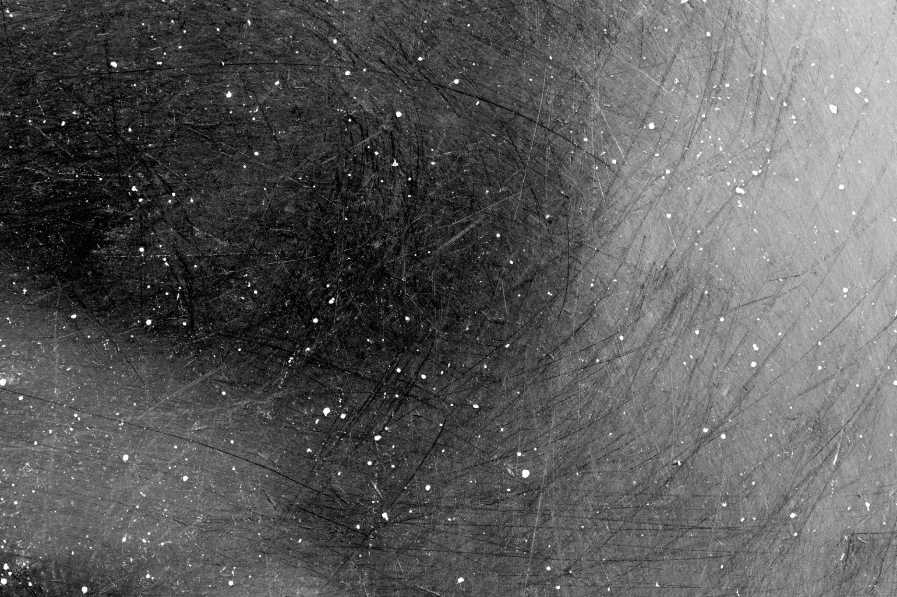
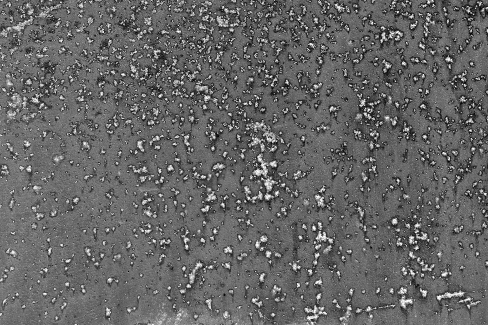
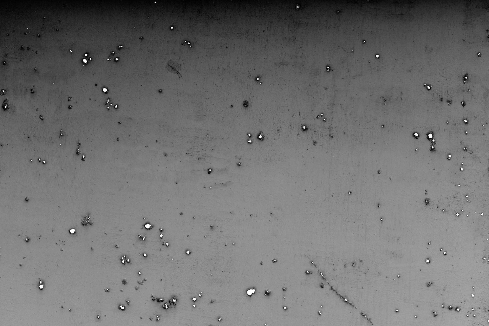

EXPERIMENT 02 · MORPHOLOGICAL PROCESSING
White Top-Hat Transformation
Detect small bright objects and defects against a nonuniform background.
01. Select Your Grayscale Image
Or Try Sample Images

Metal Surface

Bright Particles

Surface Defects
02. Original Image
Your selected image will appear here.
03 · MORPHOLOGICAL OPERATIONS
Transformation Controls
Experiment with structuring element sizes, shapes and threshold values.
01. Structuring Element Size
Choose the kernel size used for morphological opening.
02. Structuring Element Shape
Compare different shapes for detecting bright objects.
03. Threshold Value
Adjust the threshold to identify bright regions.
3004 · PROCESSING OUTPUT
Morphological Results
Morphological Opening
Opening result will appear here.
White Top-Hat Image
Top-hat result will appear here.
Thresholded Output
Binary output will appear here.
Detection Statistics
Object Count
--
Detected bright objectsForeground Pixels
--
White pixels in binary outputConnectivity
--
Connected component analysisProcessing Analysis
Apply the transformation to see the analysis.